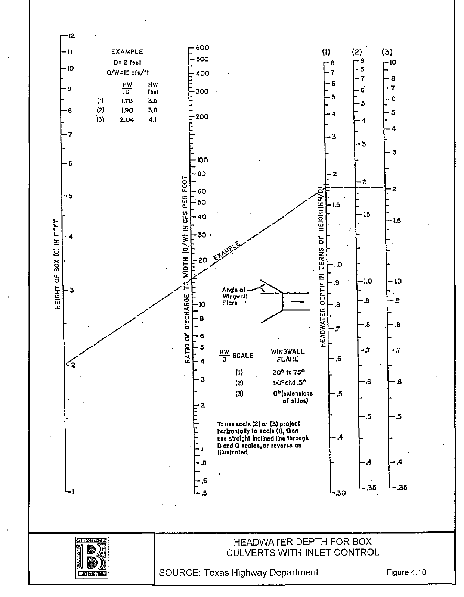

Culvert Hydraulics
From trial geometry to headwater, flow type and nomograph.
Bentonville • Section IV — Concrete box and circular concrete pipe. Flow type uses HW/D, tailwater and critical slope. All headwater depths are above the inlet invert.
Design parameters
—
Schematic only; water-surface profile is not numerically solved.
Design checks
Trial sizeCalculation trace View intermediate values
Inlet-control nomograph
A three-scale alignment chart generated for the selected entrance and slope.
The highlighted straight line joins the trial size, per-barrel discharge and HWᵢ/D. Scales are nonlinear and adapt to the trial. This chart uses the FHWA equation approximation; compare with the original chart below.
Headwater performance
Fixed geometry and fixed tailwater. The higher curve governs. Branch changes can occur at the part/full-flow transition.
Original manual nomograph Figure 4.10
Source: user-provided Bentonville Drainage Manual, Section IV. Original US customary scales; no design-point overlay on the scan.

Calculation basis
Enter a trial size and discharge, calculate inlet and outlet headwaters, and adopt the greater. The culvert material and shape are selected inputs; the reported “type” is the hydraulic flow type.
1. Geometry and critical flow
SI equations are used internally. For each barrel, q = Q/N. Critical depth solves q²T/(gA³) = 1; for a box, dc = [q²/(gB²)]⅓, capped at D. Critical slope is Sc = [nq/(A R⅔)]² at dc. Normal depth solves Manning’s equation on the rising-conveyance branch.
2. Inlet control
FHWA HDS-5 (2012), Appendix A, Table A.1, chart 1 (concrete pipe) and chart 8 (box): Z = 1.811q/(Afull√D). Unsubmerged form 1: HWᵢ/D = Hc/D + KZᴹ − 0.5S₀; submerged: HWᵢ/D = cZ² + Y − 0.5S₀. Hc = dc + Vc²/(2g). Linear interpolation joins Z = 3.5 and Z = 4. This transition is an approximation, not a digitization of the supplied chart.
3. Outlet control
Manual Figures 4.3–4.7: Type I trial uses dc + (1 + Ke)Vc²/(2g) + SfL − S₀L, with Sf at 1.1dc (capped at D). Type II trial uses TW + (1 + Ke)Vtw²/(2g) + SfL − S₀L, with Sf at TW. A submerged outlet, critical depth at the crown, or a part-full trial above 1.2D triggers the full-barrel trial.
Full-barrel energy head H = (1 + Ke)Vfull²/(2g) + [nVfull/Rfull⅔]²L. HWₒ = H + max[TW, (dc + D)/2] − S₀L. The box full-flow wetted perimeter includes its roof. Ke is from Table 4.1 and changes with free-surface versus submerged box entrances.
4. Flow type checks
| Type | Conditions checked |
|---|---|
| I | HW ≤ 1.2D; outlet control; S₀ < Sc; TW ≤ dc; part-full trial. |
| II | HW ≤ 1.2D; outlet control; S₀ < Sc; dc < TW < D; part-full trial. |
| III | HW ≤ 1.2D; inlet control; S₀ ≥ Sc; TW < D. |
| IV-A | HW > 1.2D; outlet control; TW ≥ D. |
| IV-B | HW > 1.2D; outlet control; TW < D. |
| Review | Conditions do not consistently fit the manual’s five diagrams, including submerged inlet control and branch transitions. |
Scope and assumptions
Steady flow; identical unobstructed barrels; equal flow split; negligible approach velocity; no skew, sediment, debris, storage routing, roadway overtopping or structural design. Inlet-controlled velocity assumes normal depth in a sufficiently long barrel. Outlet-controlled velocity uses area at max(TW, dc), capped at the crown. A project needing backwater profiles, hydraulic jumps or overtopping requires a more complete hydraulic model.
Manual examples use graph readings and rounding; calculated values will differ slightly. Source figures contain inconsistent inequality symbols in some scans; this tool follows the stated flow conditions and checks them explicitly. Bentonville’s local size, cover and velocity criteria are not automatically adopted for a Philippines project.
References
- Bentonville Drainage Manual, Section IV: §§4.1–4.2, Table 4.1, §4.7, §4.8, Figures 4.3–4.7, 4.10 and 4.16; Examples 1–5. User-provided PDF.
- FHWA HDS-5, Hydraulic Design of Highway Culverts, Third Edition (2012) — Appendix A equations and inlet coefficients.